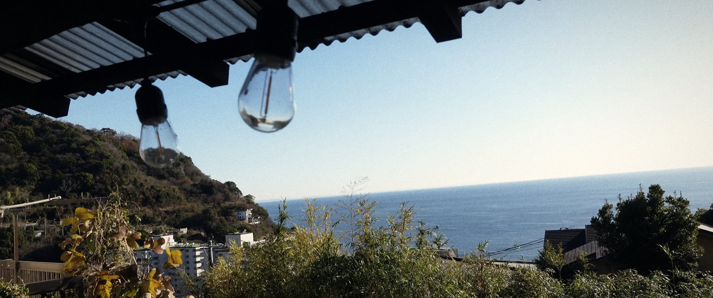
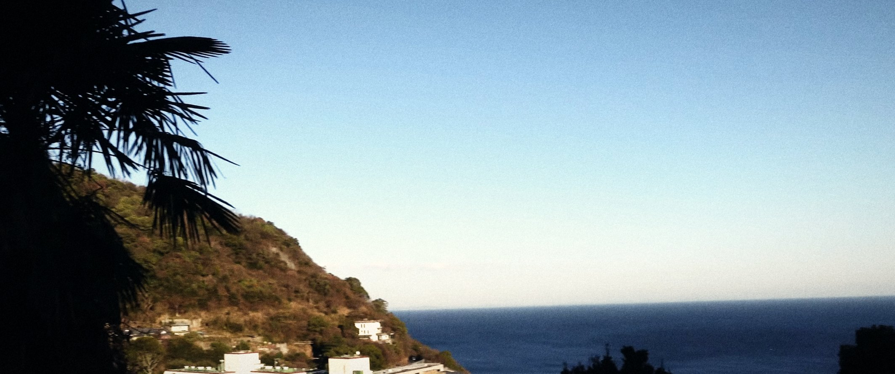

SCENE 02かばん1 / 5
公開2026.08.02
SCENE 01寝室
公開—から—

ミニマリストになりたくも永遠になれないIT系テレワーカー。 ガジェットと洋服が好き、マヨネーズが世界で一番きらい。
CUT熱海

SCENE 02かばん1 / 5
公開2026.08.02
SCENE 03かばん2 / 5
公開2026.07.31
SCENE 04かばん3 / 5
公開2026.05.24
SCENE 05かばん4 / 5
公開2026.05.17
SCENE 06かばん5 / 5
公開2026.04.19
CUT熱海

SCENE 07持ちもの
—点をすべて見る →